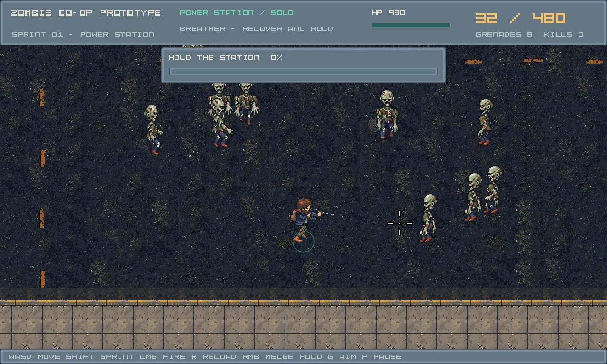
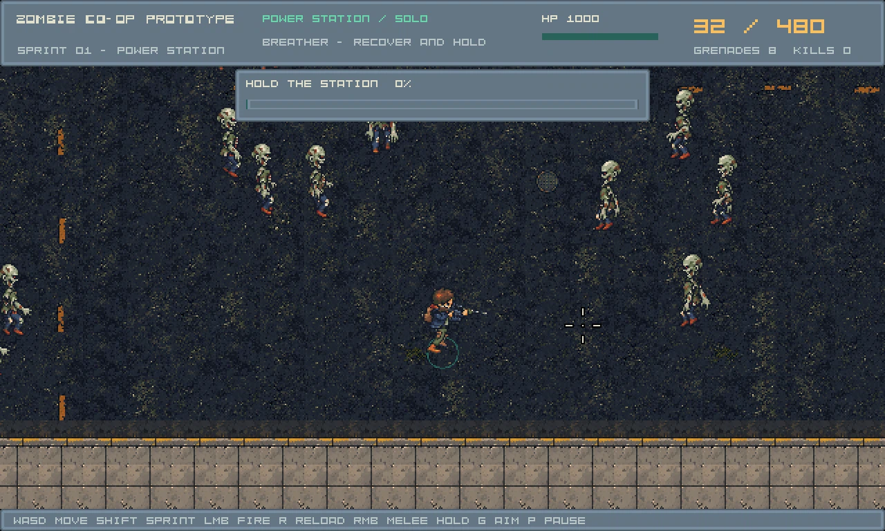

Eight native Tiled entry centers; r=64 in the candidate. r=96/seed917 uses the same implementation. Entry samples avoid submitted/next camera footprints plus margin, collision, nearby players and live actors/devices. These authored Renderer captures and traces are automated QA, not human pacing acceptance. Arrival times change. The moving fixture uses1000HP to keep observing the crowd; playable content retains100HP.
Playable candidate · Entry audit · Technical checks


No new procedural art. All actor, weapon, gore, material and cursor assets are retained.